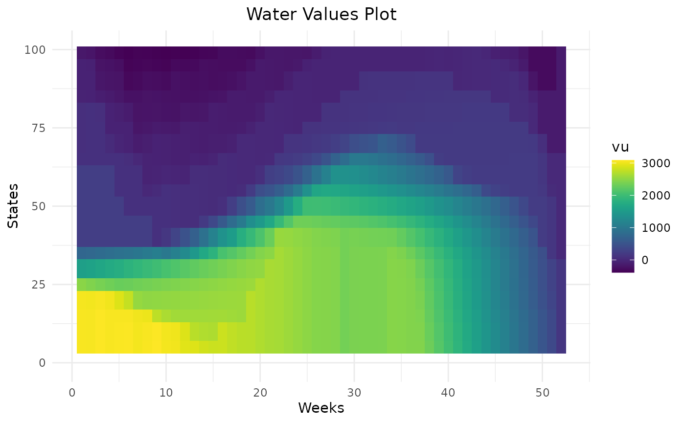
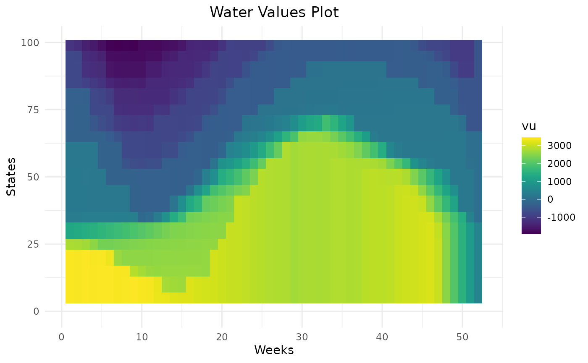

This article explains the different parameters on the function
Grid_Matrix() and how to use them.
Initialize study and reward functions
First of all, load the package and compute reward functions through simulations :
opts <- antaresRead::setSimulationPath("your/path/to/the/antares/study","input")
area <- "area"
pumping <- T #T if pumping possible
mcyears <- 1:3 # Monte Carlo years you want to use
efficiency <- getPumpEfficiency(area,opts=opts)
name = "3sim"
simulation_res <- runWaterValuesSimulation(
area=area,
nb_disc_stock = 3, #number of simulations
mcyears = mcyears,
path_solver = "your/path/to/antares/bin/antares-8.6-solver.exe",
opts = opts,
otp_dest=paste0(opts$studyPath,"/user"),
file_name=name, #name of the saving file
pumping=pumping,
efficiency=efficiency
)Now compute reward functions :
reward_db <- get_Reward(
simulation_names = simulation_res$simulation_names,
simulation_values = simulation_res$simulation_values,
opts=opts,
area = area,
mcyears = mcyears,
efficiency = efficiency,
method_old = T,
)
#> Warning: 'memory.limit()' is Windows-specific
reward <- reward_db$rewardDefine default parameters :
states_step_ratio = 1/20
penalty_low = 0
penalty_high = 0
force_final_level = F
penalty_final_level = 0
final_level = get_initial_level(area=area,opts=opts)
nb_cycle = 1Number of states
The parameter states_step_ratio, that gives the space
between two state levels in the Bellman computation, can be decreased to
have more precise results but this will also increase computational
time.
compare_states = data.frame()
for (s in c(10,20,50)){
compare_states = Grid_Matrix(
area=area,
reward_db = reward_db,
mcyears = mcyears,
states_step_ratio = 1/s,
opts = opts,
efficiency=efficiency,
penalty_low = penalty_low,
penalty_high = penalty_high,
force_final_level = force_final_level,
final_level = final_level,
penalty_final_level_low = penalty_final_level,
penalty_final_level_high = penalty_final_level,
nb_cycle = nb_cycle
)$aggregated_results %>%
dplyr::mutate(number_states = s) %>%
rbind(compare_states)
}
compare_states %>%
dplyr::filter(weeks %in% c(2,12,22,32,42,52),!is.na(vu)) %>%
dplyr::mutate(number_states = as.character(number_states)) %>%
ggplot2::ggplot() +
ggplot2::aes(x = states, y = vu, color = number_states) +
ggplot2::geom_point() +
ggplot2::facet_wrap(ggplot2::vars(weeks))Variations of water values are more detailed with 50 states than 10. In this example, 20 states seem to be enough to represent the variation of water values.
compare_states %>%
dplyr::filter(weeks == 1) %>%
dplyr::mutate(number_states = as.character(number_states)) %>%
ggplot2::ggplot() +
ggplot2::aes(x = states, y = value_node, color = number_states) +
ggplot2::geom_line()The difference between bellman values with 10 states and 20 states is quite important in this example. With 10 states, bellman values are lower because the linear interpolation of bellman values underestimates real bellman values.
Cvar value
Bellman values can be computed with 2 different formulas :
-
cvar_value = 1: At the end of each week in the backward recursion, for each state compute the mean of Bellman values over the scenarios. This method computed the minimum of the expectancy of weekly costs with the constraint that the hazards of the following week are not yet known. Use this method to minimize costs. -
cvar_value < 1: Similar tocvar_value = 1but instead of the mean over all scenarios, take the mean overcvar_valuepercent of the worst scenarios for each week. Use this method to avoid years with high costs and in particular to minimize the unsupplied energy. The valuecvar_valuecan be adapted to be more or less cautious.
compare_method = data.frame()
for (m in c(1, 0.5, 0.2)){
compare_method = Grid_Matrix(
area=area,
reward_db = reward_db,
mcyears = mcyears,
states_step_ratio = states_step_ratio,
cvar_value = m,
opts = opts,
efficiency=efficiency,
penalty_low = penalty_low,
penalty_high = penalty_high,
force_final_level = force_final_level,
final_level = final_level,
penalty_final_level_low = penalty_final_level,
penalty_final_level_high = penalty_final_level,
nb_cycle = nb_cycle
)$aggregated_results %>%
dplyr::mutate(cvar_value = m) %>%
rbind(compare_method)
}
compare_method %>%
dplyr::mutate(cvar_value = as.character(cvar_value)) %>%
dplyr::filter(weeks %in% c(2,12,22,32,42,52),!is.na(vu)) %>%
ggplot2::ggplot() +
ggplot2::aes(x = states, y = vu, color = cvar_value) +
ggplot2::geom_point() +
ggplot2::facet_wrap(ggplot2::vars(weeks))Smaller cvar_value gives higher water values and
therefore more conservative levels trajectories.
compare_method %>%
dplyr::mutate(cvar_value = as.character(cvar_value)) %>%
dplyr::filter(weeks == 1) %>%
ggplot2::ggplot() +
ggplot2::aes(x = states, y = value_node, color = cvar_value) +
ggplot2::geom_line()
Bellman values with small cvar_value method are smaller
as they take into account for each week, the worst scenarios so they
overestimate the total cost.
Respect of rule curves
In case, there is rule curves in the storage, penalties on bottom and
top rule curves can be used to encourage storage levels to stay inside
rule curves. The value of penalty_low (in euros/MWh) should
be chosen with respect to thermal clusters cost and to unsupplied cost,
depending if it is better to use expensive thermal cluster or to not
respect the lower rule curve. On the opposite, penalty_high
should be chosen with respect of the spillage cost.
Penalties are added in the computation of Bellman values on the future level (at the end of the week) and also added at the end of the algorithm in the initial level (at the beginning of the week) :
With the penalty defined as :
compare_rulecurve = data.frame()
for (p in c(0,150,500)){
compare_rulecurve = Grid_Matrix(
area=area,
reward_db = reward_db,
mcyears = mcyears,
states_step_ratio = states_step_ratio,
opts = opts,
efficiency=efficiency,
penalty_low = p,
penalty_high = p,
force_final_level = force_final_level,
final_level = final_level,
penalty_final_level_low = penalty_final_level,
penalty_final_level_high = penalty_final_level,
nb_cycle = nb_cycle
)$aggregated_results %>%
dplyr::mutate(penalty = p) %>%
rbind(compare_rulecurve)
}
compare_rulecurve %>%
dplyr::filter(weeks %in% c(2,12,22,32,42,52),!is.na(vu)) %>%
dplyr::mutate(penalty = as.character(penalty)) %>%
ggplot2::ggplot() +
ggplot2::aes(x = states, y = vu, color = penalty) +
ggplot2::geom_point() +
ggplot2::facet_wrap(ggplot2::vars(weeks))
Higher the penalty on rule curves are, higher the water values are below the lower rule curve and lower the water values are above the higher rule curve. This will help the storage to remain inside rule curves. On weeks on the beginning the year, there are different levels of water values reflecting that it can take more than one week to get back inside rule curves. Thanks to dynamic programming, water values are able to anticipate the respect of future rule curves.
Respect of final level
As for the respect of rule curves, it is possible to encourage the
storage to end the year at a specific level thanks to penalties. The
option force_final_level must be TRUE. The
wanted final level is specified with parameter final_level.
Specific values of penalties are used for the final week and are given
by penalty_final_level_low and
penalty_final_level_high.
res = Grid_Matrix(
area=area,
reward_db = reward_db,
mcyears = mcyears,
states_step_ratio = states_step_ratio,
opts = opts,
efficiency=efficiency,
penalty_low = penalty_low,
penalty_high = penalty_high,
force_final_level = T,
final_level = final_level,
penalty_final_level_low = 3000,
penalty_final_level_high = 1000,
nb_cycle = nb_cycle
)Water values will encourage the storage to end at the specified final level thanks to their cone shape.
Number of cycles
By default, final bellman values are equal to zero. This means that unless the final level is forced, there is no value in keeping storage at the end of the year. To avoid this and if the final level is not fixed, it is possible to do several computation of Bellman values to estimate final Bellman values and to use then at the end of the horizon. Empirically, 2 iterations is enough.
compare_cycle = data.frame()
for (n in c(1,2)){
compare_cycle = Grid_Matrix(
area=area,
reward_db = reward_db,
mcyears = mcyears,
states_step_ratio = states_step_ratio,
opts = opts,
efficiency=efficiency,
penalty_low = penalty_low,
penalty_high = penalty_high,
force_final_level = force_final_level,
final_level = final_level,
penalty_final_level_low = penalty_final_level,
penalty_final_level_high = penalty_final_level,
nb_cycle = n
)$aggregated_results %>%
dplyr::mutate(nb_cycle = n) %>%
rbind(compare_cycle)
}

compare_cycle %>%
dplyr::filter(weeks %in% c(2,12,22,32,42,52),!is.na(vu)) %>%
dplyr::mutate(nb_cycle = as.character(nb_cycle)) %>%
ggplot2::ggplot() +
ggplot2::aes(x = states, y = vu, color = nb_cycle) +
ggplot2::geom_point() +
ggplot2::facet_wrap(ggplot2::vars(weeks))With only one cycle, water values are lower at the end of the year because, with null final bellman values,the optimal solution is to use all the storage left. With two cycles, water values are higher. At the beginning of the year, water values are similar so in this example (and in most cases), two cycles are enough.